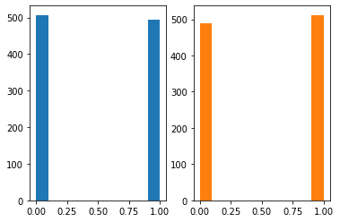

13wk-2: MCMC (1)
5/30/23
강의영상
youtube: https://youtube.com/playlist?list=PLQqh36zP38-zyk8psVKy2OaZs3zV4ExWn
import
정리 (low-resolution)
- 우리가 하고 싶었던 것: 어떠한 현상에 대하여, 확률공간 \((\Omega,{\cal F}, \mathbb{P})\) 에 대한 완전한 기술
- 이것을 수행하는 방법.
- 방법1: \((\Omega,{\cal F}, \mathbb{P})\)를 state 하고 “관심있는 어떤 것”을 이론적으로 구한다.
- 방법2: \(\omega \to {\boldsymbol X}(\omega)={\boldsymbol x}\) 를 무한번 반복 관찰하고 (=시뮬레이션하고!) “관심있는 어떤 것”을 시뮬레이션으로 근사
- 방법3: 독립적으로 \(n\)회 관찰된 \(({\boldsymbol x}_1,{\boldsymbol x}_2,\dots,{\boldsymbol x}_n)\) 를 이용하여 “관심있는 어떤 것”을 추정, 추정 결과를 합리적으로 설득.
- 시뮬레이션 가능하면 최고인것 같은데?
- 통계학과 최고의 발명품
- EM 알고리즘
- FDR
- 부스트랩
전통적인 난수생성 방법
균등분포
- 가정: 균등분포에서는 뽑을 수 있다고 가정한다. (제가 사실 여기는 잘 몰라요)
- 균등분포 이외의 난수는 어떻게?… (어려워요)
베르누이, 이항분포, 포아송, 지수분포
- 베르누이
fig, ax = plt.subplots(1,2)
ax[0].hist((x > 0.5)*1.0,color='C0');
ax[1].hist(np.random.binomial(1,0.5,size=1000),color='C1');
- \(X \sim Ber(p)\), \(p=0.5\)
- 이항분포: 베르누이의 합으로!
x = np.random.rand(10*100000).reshape(10,100000)
fig, ax = plt.subplots(1,2)
ax[0].hist((x>0.5).sum(axis=0),bins=9);
ax[1].hist(np.random.binomial(10,0.5,size=100000),color='C1',bins=9);- 포아송: 이항분포의 근사로
- 지수분포: 포아송 프로세스를 이용하여!
inverse cdf, 박스뮬러변환
- inverse cdf: 지수분포를 뽑는 또 다른 테크닉: (지수분포가 아니더라도 CDF를 알면 뽑을 수 있음)
- 박스뮬러변환: 지수분포 + uniform으로 정규분포를 뽑는 테크닉
- 카이제곱분포, 감마분포: 지수분포를 이용하면 샘플링가능
베타분포를 샘플링 (전통적 방법)
- 목표: \(X_1,X_2,X_3,\dots,X_{100000} \overset{i.i.d.}{\sim} {\cal B}(2,6)\)
- 전략: 아래를 이용한다.
- \({\cal B}(2,6) \overset{d}{=} \frac{{\cal G}(2,1)}{{\cal G}(2,1)+{\cal G}(6,1)}\)
- \({\cal G}(2,1) \overset{d}{=} {\cal E}(1) + {\cal E}(1)\)
- \({\cal G}(6,1) \overset{d}{=} {\cal E}(1) + {\cal E}(1) +{\cal E}(1)+{\cal E}(1)+{\cal E}(1)+{\cal E}(1)\)
- inverse cdf를 이용하여 지수분포를 뽑을 수 있다고 가정하자.
베타분포를 샘플링 (이상한 방식)
pdf 정의
- 모티브: 그냥 pdf를 입력하면 알아서 샘플링되도록 할 수 없나?
- 예비학습: 감마함수
- 베타분포의 pdf
\[f_X(x) = \frac{\Gamma(\alpha+\beta)}{\Gamma(\alpha)\Gamma(\beta)}x^{\alpha-1}(1-x)^{\beta-1}\]
시도1: 망했음
step1: 초기화
- 베타분포에서 10만개의 샘플을 뽑아보자.
- 일단 \({\bf xx}=(x_0,x_1,\dots,x_{T-1})\)를 초기화를 하자.
- 현재의 \(x_i\)값은 \(x_0=0.99\) 만 있지만 궁극적으로는 \({\cal B}(2,6)\)에서 생성된 샘플로 채우고 싶다.
step2: 후보 샘플링
- 하나의 \(y\) 을 균등분포에서 샘플링한다.
step3: 비교
- \(xx[0]\) vs \(y\)

step4: 선택
- 비교결과: \(xx[0]\) 보다 \(y\)가 나은것 같다
- 선택: \(xx[1]=y\) 로 하자
만약에 \(xx[0]\)이 \(y\)보다 나은것 같다면? 그냥 \(xx[1]=xx[0]\)으로 선택
step 1~4 반복: 망했음
시도2: 성공
step1: 초기화
- 베타분포에서 10만개의 샘플을 뽑아보자.
- 일단 \({\bf xx}=(x_0,x_1,\dots,x_{T-1})\)를 초기화를 하자.
- 현재의 \(x_i\)값은 \(x_0=0.99\) 만 있지만 궁극적으로는 \({\cal B}(2,6)\)에서 생성된 샘플로 채우고 싶다.
step2: 후보 샘플링
- 하나의 \(y\) 을 균등분포에서 샘플링한다.
step3: 비교
- \(xx[0]\) vs \(y\)
step4: 선택
- 비교결과: \(xx[0]\) 보다 \(y\)가 나은것 같다
- 선택: 그렇지만 무조건 \(xx[1]=y\) 로 선택하면 큰일나겠음.. 아래의 확률로 선택하자!
- 확률 \(\frac{f(xx[0])}{f(xx[0])+f(y)}\) 로 \(xx[1]=xx[0]\)을 선택!
- 확률 \(\frac{f(y)}{f(xx[0])+f(y)}\) 로 \(y\)를 선택!